Shaping
Cool Cities
Multi-source data fusion for modelling urban heat mitigation across six European cities
Gerardo Ezequiel Martin Carreno
MSc Urban Spatial Science · UCL
Six cities · Five data sources · 118 features · Open data
Three Gaps Preventing Action
Six Cities, Three Climates
Oceanic (Cfb): Amsterdam, Paris
Mediterranean (Csa): Athens, Barcelona
Transitional: Berlin Cfb/Dfb · Madrid Csa/BSk
40,344 grid cells at 30m resolution · ~6 km² per city

Five Data Sources, One Framework
118 features from 5 open-source tools. Zero proprietary data. Any European city can replicate this tomorrow.

Google Earth Engine
Landsat 30m · Surface temperature · Vegetation indices Land Surface Temperature
Land Surface Temperature
 NDVI Vegetation Index
NDVI Vegetation Index
Where vegetation disappears, temperatures spike. This inverse pattern is the dependent variable our model learns to predict.
Urbanity
Street network topology · Connectivity · Ventilation pathways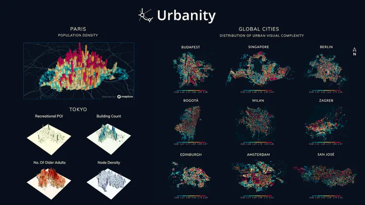
Source: Urbanity global dataset Our six cities: network topology
Our six cities: network topology
Amsterdam’s regular canal grid channels cooling winds. Athens’s organic fabric traps them. Network topology determines whether park cooling reaches surrounding streets.
GlobalStreetscapes
10 million street-level images · Green View Index · Pedestrian perspective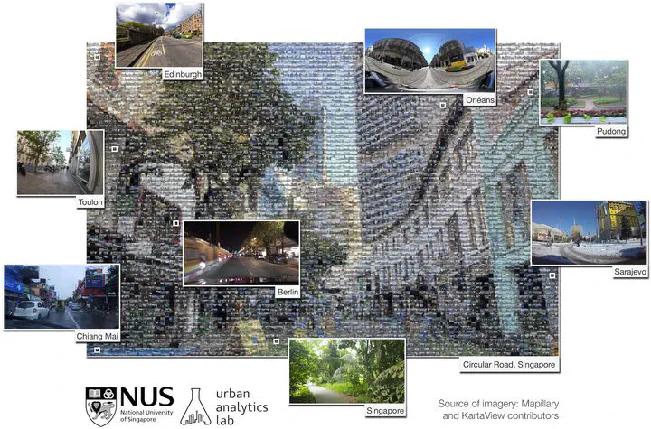
Source: 10M street-level images Our six cities: coverage points
Our six cities: coverage points
Satellites see canopy from above. Street imagery sees shade from below. Divergence between the two validates the multi-source approach.
EUBUCCO
3D building morphology · Heights · Footprints · Canyon geometry
Canyon geometry drives nighttime heat retention. Paris’s uniform Haussmann fabric vs Athens’s irregular growth produce fundamentally different thermal dynamics.
Six Cities in 3D
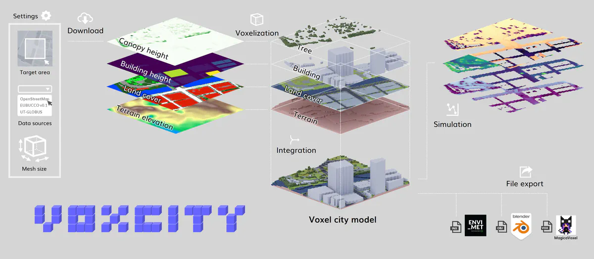
VoxCity 3D model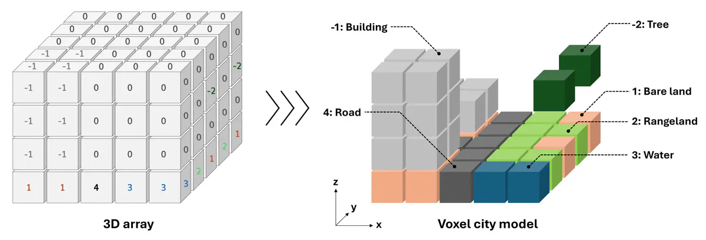
Voxelised urban form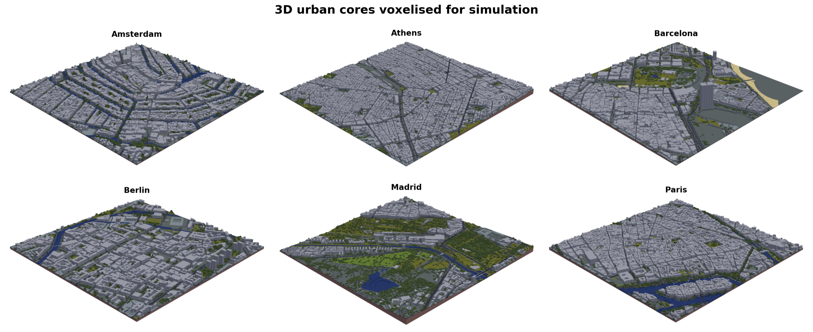


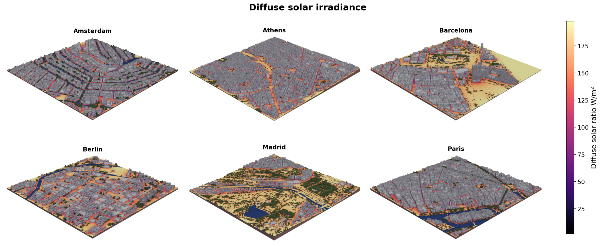
From Prediction to Prescription
XGBoost with SHAP explainability: the model shows its work at every stage. The planner keeps the final call.
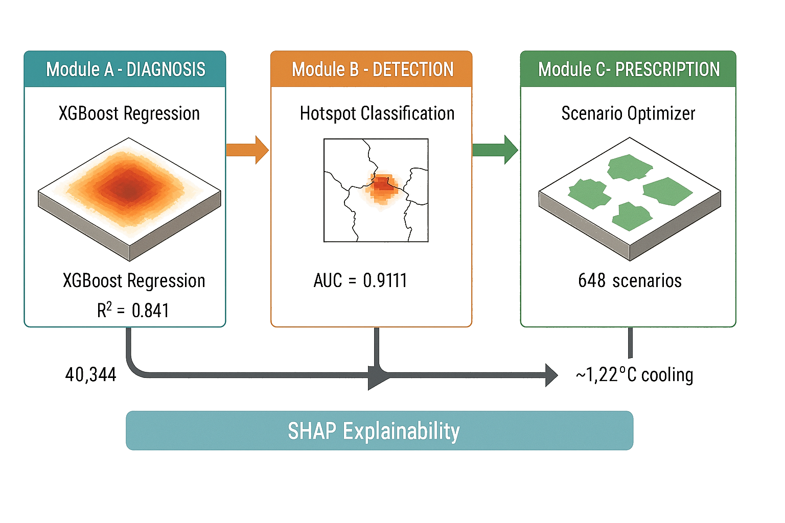
XGBoost Regression: Why This Approach?
Can We Trust the Numbers?
Hot areas sit next to hot areas. Without careful testing, the model could just memorise where things are instead of learning why they’re hot. Five checks prevent that.
Spatial cross-validation
The model never sees its test area’s neighbours during training. 5 folds, 600m spatial blocks, stratified by heat intensity and density.
City-demeaned targets
Raw temperature R² = 0.97, but that mostly captures climate. Subtracting each city’s mean isolates what urban form does. R² = 0.84.
Scale sensitivity (MAUP)
Tested at 30m, 60m, 90m. At 60m the model loses 17% of explained variance; it falls between radiative and advective physics. 30m is the right scale.
Residual autocorrelation
Moran’s I confirms significant spatial clustering in predictions (I = 0.66–0.92, p<0.001), validating why spatial blocking was essential.
Stability & tuning
5 random seeds (σR² = 0.064). 200 Bayesian trials optimised 820 trees, depth 6, lr 0.03. Features: 165 base → 189 with spatial lags → 118 after correlation filter (|r|>0.92).
The model learns morphology, not spatial patterns.
Does It Work Across Contexts?
| City | R² | RMSE |
|---|---|---|
| Paris | 0.932 | 0.49°C |
| Barcelona | 0.926 | 0.85°C |
| Amsterdam | 0.880 | 0.44°C |
| Athens * | 0.730 | 0.63°C |
| Berlin | 0.727 | 0.66°C |
| Madrid | 0.718 | 1.53°C |
The model works, but accuracy isn’t the finding. What the model reveals about what drives heat is.
* Athens R² drops with blending (−2.8%): its topographic basin overrides climate-zone correction. That’s not a failure; it’s a finding. Geography matters.

What Actually Drives Urban Heat?
Geography Changes Everything
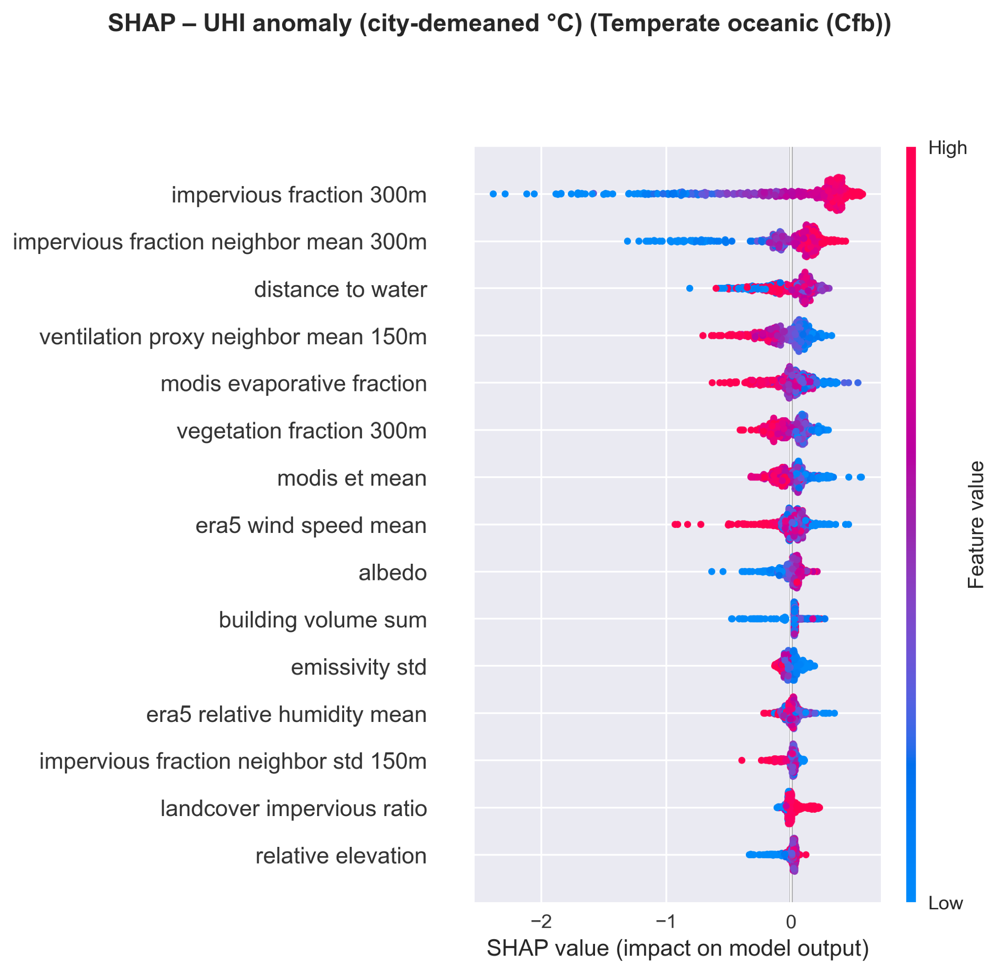
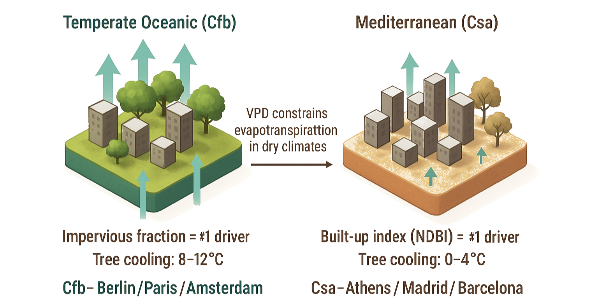
Geographic contingency isn’t noise.
It’s the signal.
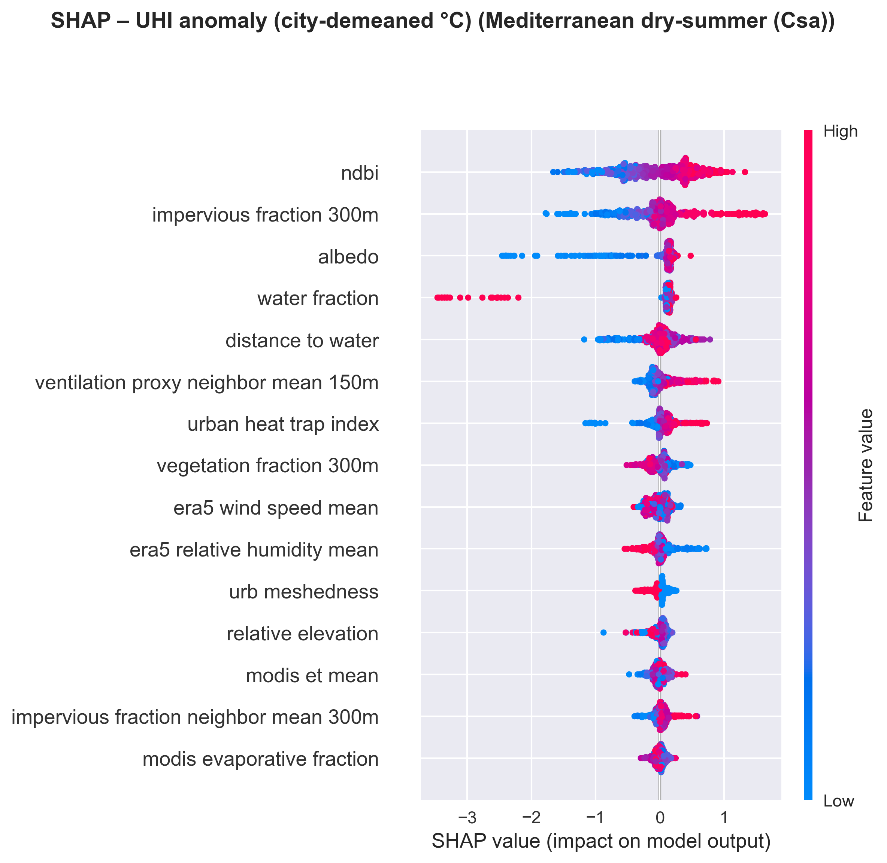
From Temperature to Risk: Classifying Hotspots
The regression tells us how hot each cell is. But planners need to know which areas are dangerously hot. That’s a classification problem: we turn continuous temperature into a binary risk flag.
- XGBoost classification, upweighted to catch rare hotspots
- Calibrated probabilities: when the model says 0.7, it means 70%
- Threshold set to catch at least 60% of real hotspots
Athens: 30.8% vs Paris: 7.2%

Where Heat Meets Vulnerability
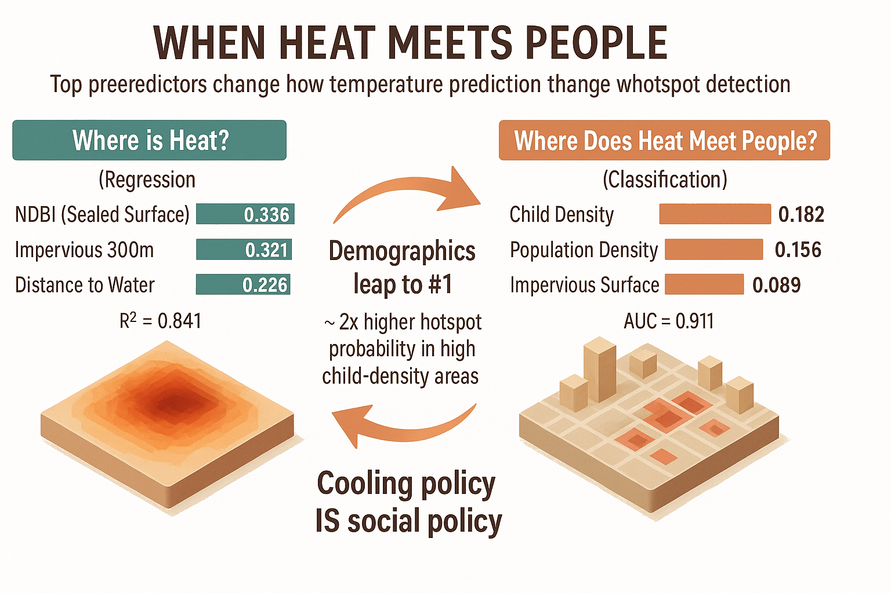
When classifying hotspots, child density becomes #1. ~2× higher hotspot probability in vulnerable areas.

Priority: Heat risk (40%) + Vulnerability (35%) + Cooling potential (25%)
How We Test Interventions
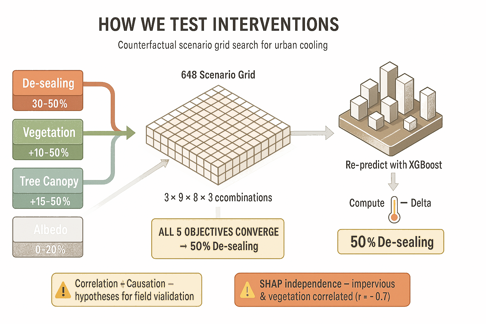
Process per scenario
Modify features in priority zones (top 10%)
Re-predict with blend model
Compute cooling Δ vs. baseline
Rank by cooling and cost-effectiveness
⚠ Limitations
Correlation ≠ causation: predictions are hypotheses for field validation
Feature correlation: impervious & vegetation (r≈−0.7) partially double-count cooling
All 5 objectives converge → 50% de-sealing
The 50% Regime Boundary
What Should Each City Do?
Same anchor everywhere: de-seal first. Supporting levers change by climate and morphology.
e.g. permeable paving in basin-floor neighbourhoods like Omonia
e.g. opening sealed Eixample courtyards, Superblocks-style depaving
e.g. OASIS schoolyard depaving, extending Seine corridor cooling
e.g. Schwammstadt sponge-city approach in polycentric cores
e.g. cool surfaces + permeable paving (canals already cap water cooling)
e.g. cool roofs + drought-tolerant planting (avoid water-intensive greening)

Predicted cooling from cost-effective strategy
Co-Benefits & Equity Safeguards
Three Insights for Urban Heat Policy
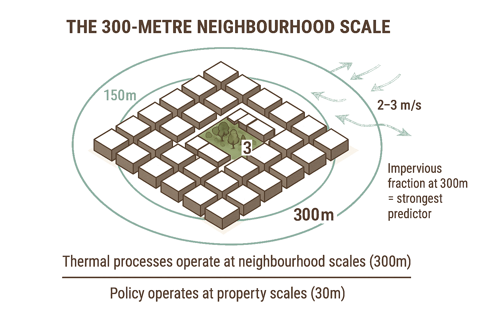
1Heat is a neighbourhood problem
Cooling propagates 300 m under wind. Coordinated action across blocks, not plots.
Surface matters more than canopy
Permeability drives 3× more cooling than vegetation. De-sealing deserves equal investment.
Every city needs its own strategy
Same tree cools 8–12°C in Berlin but 0–4°C in Athens. Geography is the signal.
What This Framework Cannot Do
- Daytime only: Landsat passes at 10:30 AM, not nighttime when mortality peaks
- Correlations, not causes: the 50% threshold needs field validation before policy
- 30m resolution: screens neighbourhoods, not individual streets
- Uneven coverage: street-level imagery covers 29–71% by city
But: GEE features hold the top 8 SHAP positions — satellite data alone carries most of the signal. Any city with free Landsat access can run this pipeline tomorrow.
Waiting for perfect evidence while heatwaves kill thousands is itself a policy choice.
Every city can start
shaping cooler cities
today.
Open data. Open tools. Open method.
61,000 deaths demand tools that work now, with data cities already have.
Questions?
Open data · Open tools · Open method
Gerardo Ezequiel Martin Carreno · UCL CASA · The Bartlett